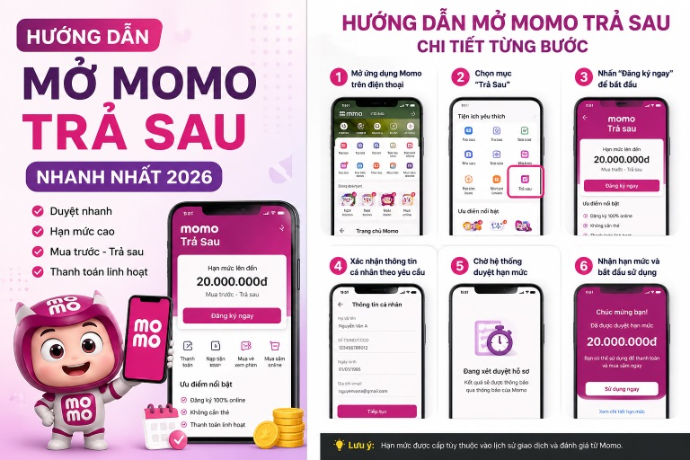

Ví Trả Sau MoMo là một hình thức tiêu dùng trước - trả tiền sau cực kỳ tiện lợi do MoMo hợp tác cùng Ngân hàng TPBank cung cấp. Dịch vụ này cấp cho người dùng một hạn mức chi tiêu nhất định (lên đến hàng chục triệu đồng) để mua sắm, thanh toán hóa đơn điện nước, nạp tiền điện thoại, đặt đồ ăn... ngay cả khi tài khoản ngân hàng hoặc ví MoMo của bạn đang hết tiền.
Bạn sẽ được miễn lãi lên đến 45 ngày. Sau khi chi tiêu, bạn chỉ cần hoàn trả lại số tiền đã sử dụng đúng kỳ hạn vào tháng sau để tiếp tục duy trì dịch vụ.
Để hệ thống MoMo và ngân hàng phê duyệt hồ sơ mở ví của bạn ngay lần đầu tiên, tài khoản của bạn cần đạt các tiêu chí cơ bản sau:
Dưới đây là sơ đồ tổng quan quy trình thực hiện nhanh chóng trên ứng dụng điện thoại:

Chi tiết từng bước thực hiện cụ thể như sau:
Mở ứng dụng MoMo trên điện thoại của bạn. Trên thanh tìm kiếm ở đầu trang, nhập từ khóa "Ví Trả Sau". Nhấp chọn vào biểu tượng dịch vụ Ví Trả Sau xuất hiện trên màn hình kết quả.
Hệ thống sẽ hiển thị các thông tin cơ bản dựa trên tài khoản của bạn. Bạn tiến hành kiểm tra lại, điền thêm các thông tin nghề nghiệp, địa chỉ, thu nhập (nếu có) theo biểu mẫu yêu cầu của ngân hàng đối tác TPBank.
Đọc kỹ các điều khoản và hợp đồng hiển thị trên màn hình. Sau đó, một mã OTP bí mật sẽ được gửi qua SMS về số điện thoại đăng ký MoMo của bạn. Hãy nhập chính xác mã OTP này để ký hợp đồng mở ví.
Hồ sơ của bạn sẽ được phê duyệt tự động cực nhanh trong vòng 1 - 3 phút. Khi thành công, màn hình sẽ hiển thị chúc mừng kèm số tiền hạn mức được cấp. Giờ đây bạn đã có thể bắt đầu sử dụng để mua sắm.
Ví Trả Sau MoMo là một giải pháp tài chính thông minh, an toàn và cứu cánh tuyệt vời cho những ngày cuối tháng kẹt tiền. Chỉ với vài bước đăng ký vô cùng đơn giản trực tuyến, bạn đã sở hữu ngay một nguồn vốn tiêu dùng linh hoạt. Hãy nhớ sử dụng chi tiêu thông minh và thanh toán dư nợ đúng hạn để xây dựng điểm tín dụng thật tốt nhé!